The Problem
Few things will make people run faster than discovering their bus is a mere 2 minutes away from the bus stop.
Transit officials have identified a problem they would like to solve.
Due to expansion, numerous bus routes have been recently added and many of those routes stop at the same bus stop. Riders want to know what the next arriving bus is and how much time they have to get to the bus stop. Simply rushing to the stop when you see a bus coming no longer works because it might not be the bus the rider is expecting.
Riders are currently complaining the most about the bus stop at Washington and State, which has seven bus lines serving the stop.
Discovery - Survey
When waiting at a bus stop, how often do you think your bus is arriving when it is actually a different bus?
A large portion of people experience or have experienced the frustration of not knowing which bus is arriving when waiting at the stop.

Do you, or have you ever used a transit navigation app?
100% of users had used a transit navigation app and the top navigation app was google maps.
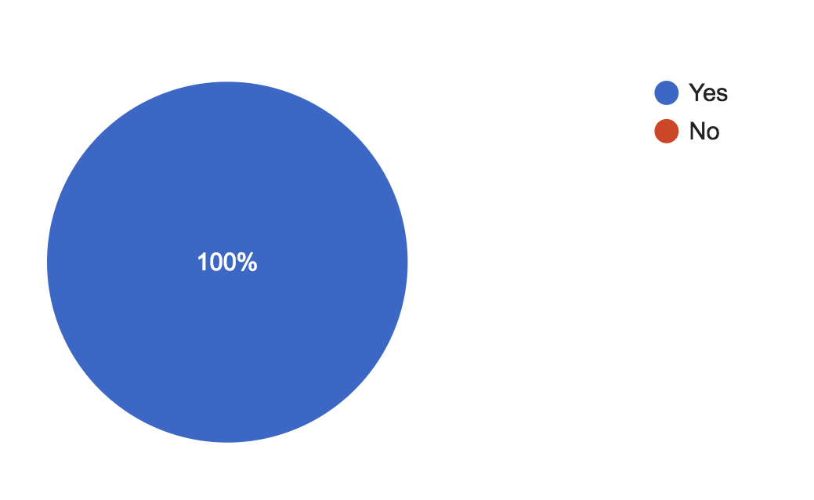
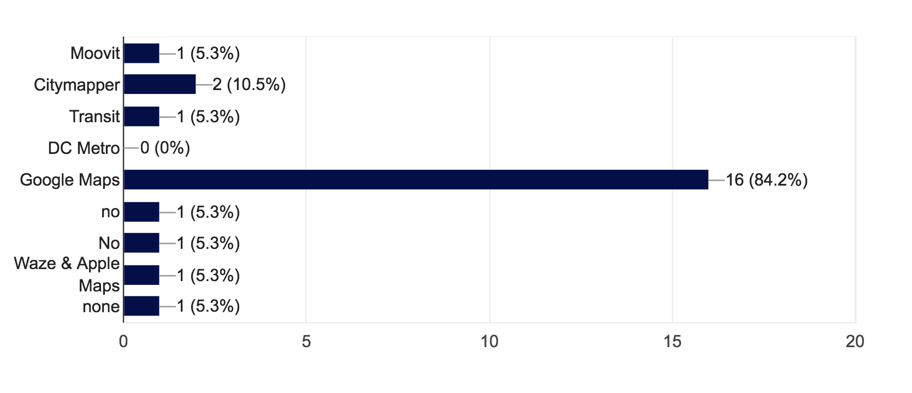
If a transit app was designed specifically for your needs, with only THREE features, which would they be?
The three most popular bus transit app ideas where to have it show the cheapest and fastest route options, to have real time tracking including alerts for delays and early arrivals and to have it show when and when to catch a particular bus.
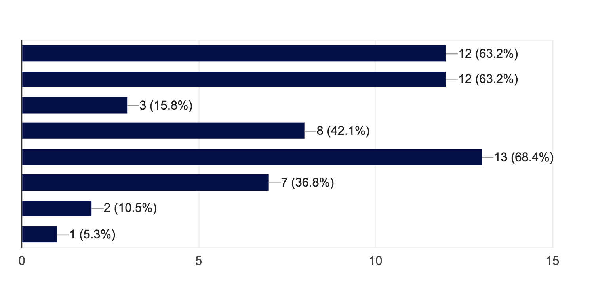
Strategy
Google Maps
I performed a s.w.o.t analysis and found room in the market for a competitor to create a similar app but with a more attractive interface. An app specific to one mode of transport with high accuracy for bus schedules will also give a competitor an advantage.
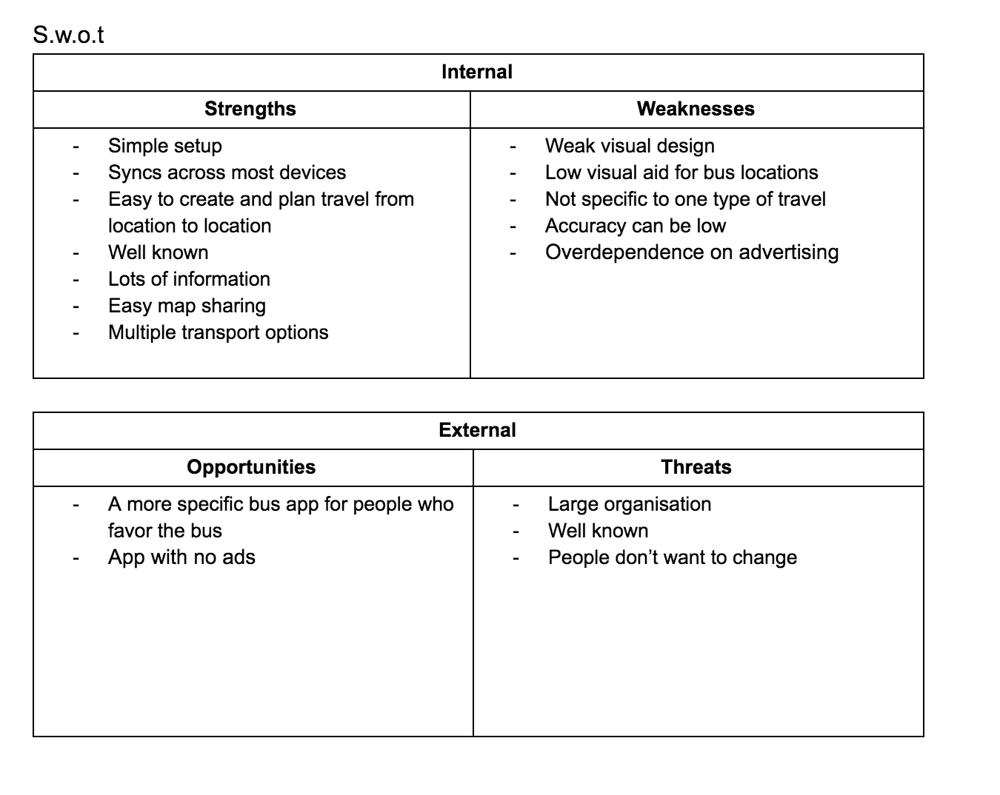
Transit
In my s.w.o.t analysis I found that a competitor would benefit by creating an app with more specific travel data with details about the user position relative to bus station locations. There is also room to create an app which describes functions more thoroughly. If the user had access to bus route reviews or forums I think this would help them in their decision process, especially those who don’t enjoy riding the bus due to bad experiences.
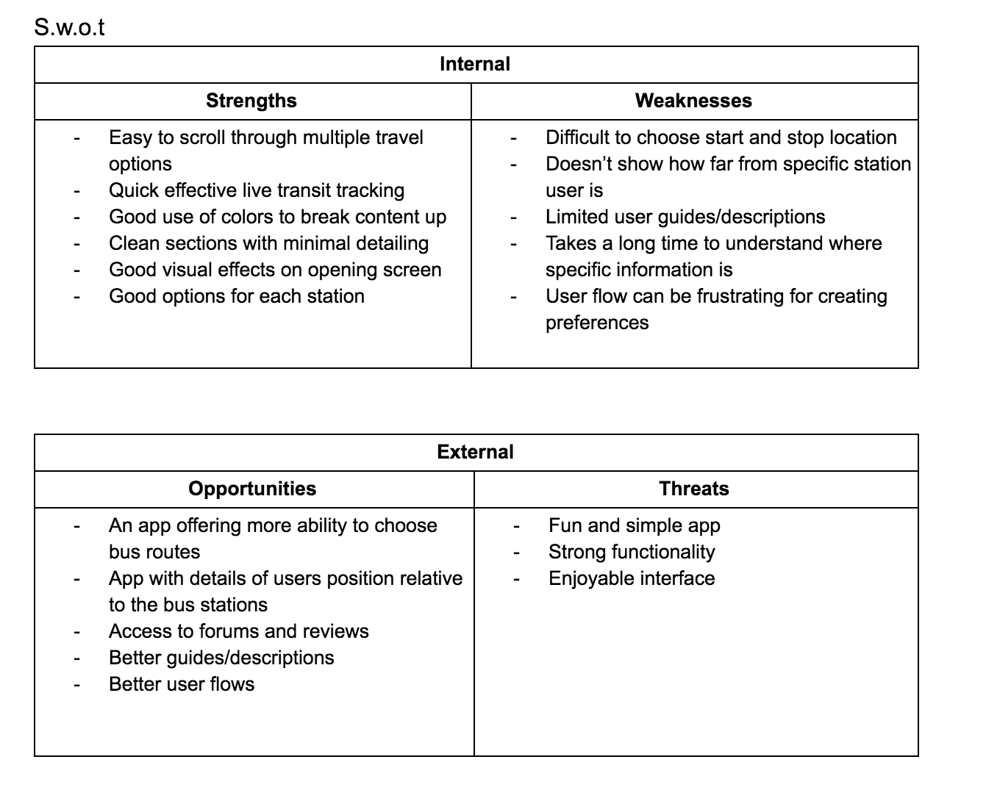
Architecture
Sketches
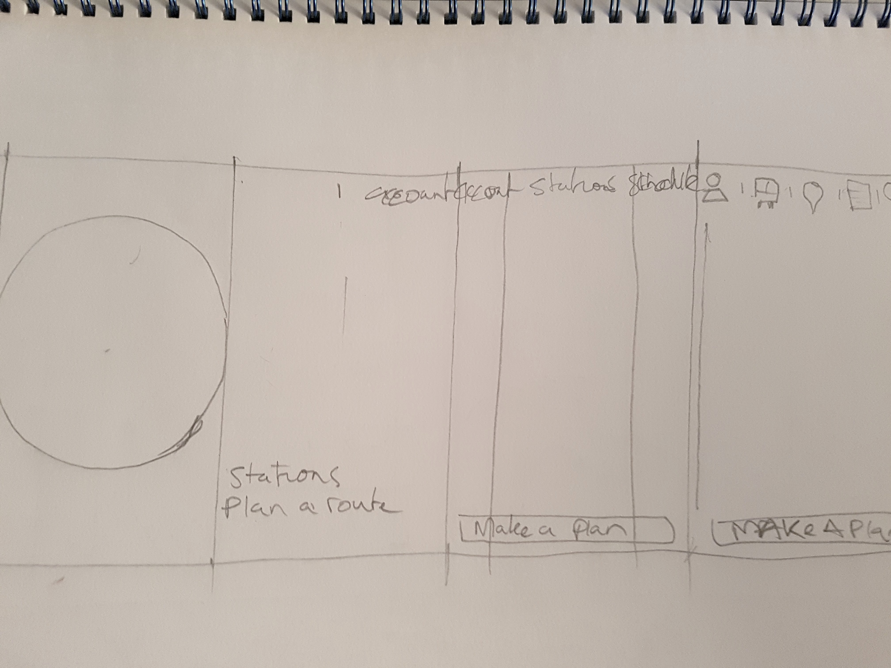
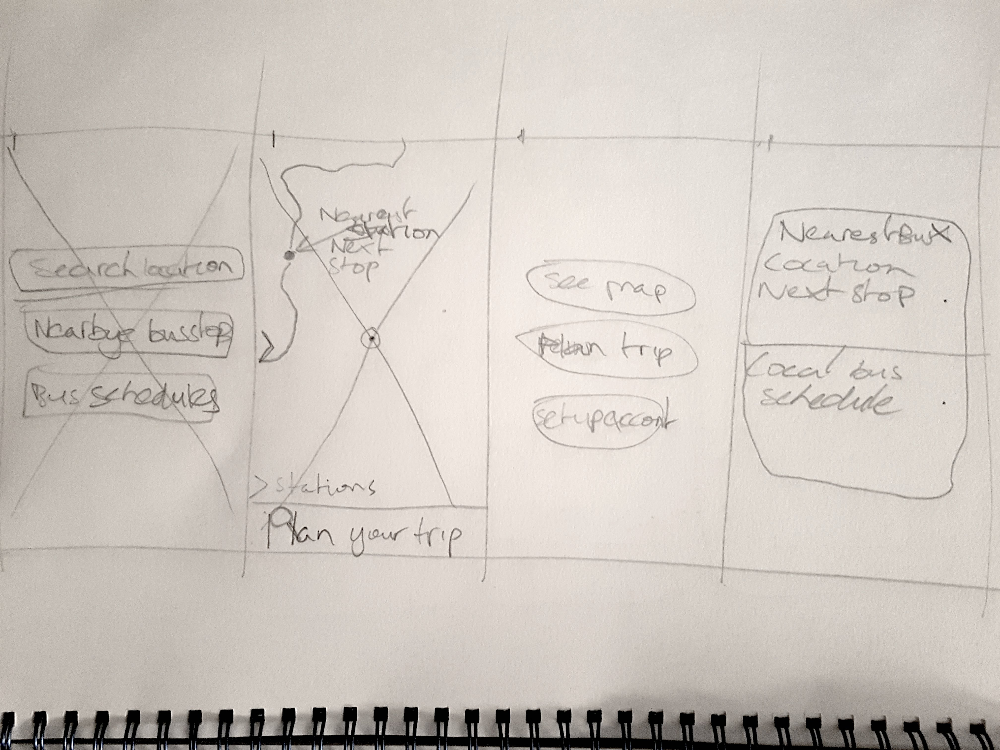

I had three people participate in a user test for the BusyBus prototype. Using the Marvel app the participants navigated the three pages while giving feedback on the experience.
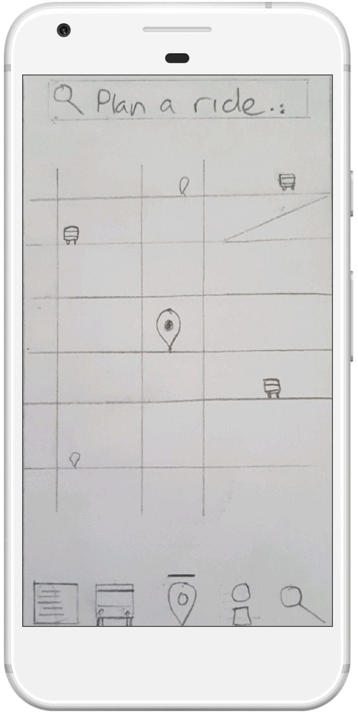
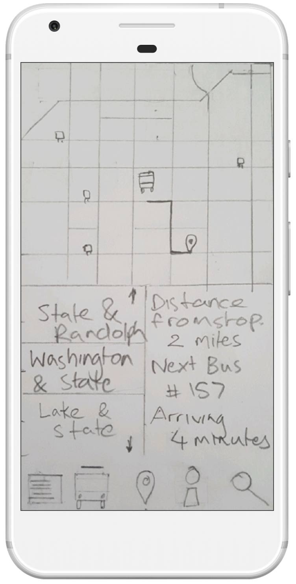
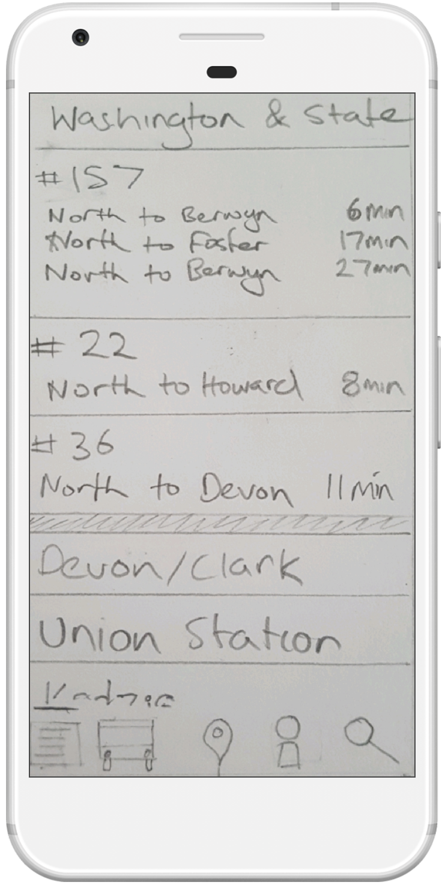
Visual Design
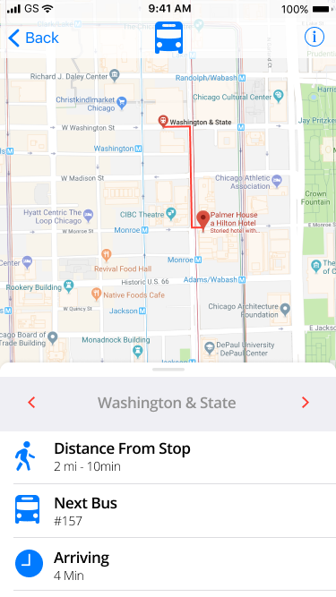
First Version - Comments
"Icons aren't representative of iOS icons. Replace with a back arrow to provide more simple navigation."
"Want to ensure that we are providing users with pertinent information within each section between the dividers. It would be best to arrange this information together in a group or within a row horizontally."
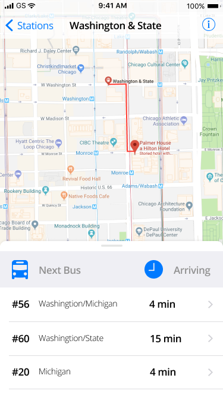
Second Version - Comments
"In the table guidelines that you referenced, you'll notice that the lines used as separators actually bleed off the right side of the screen and only the right side.
"The bus icon might still work, but the clock is drawing a lot of attention."
"I recommend making all the type on the row the same size. It will give you more consistency."
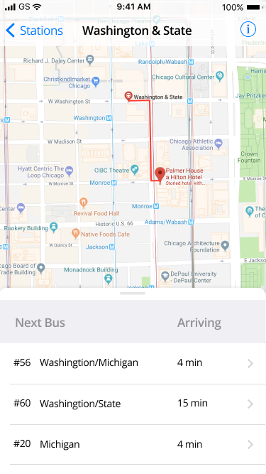
Third Version - Comments
"Right now, the information on the rows has nice typographical hierarchy, but the additional information I'm suggesting could challenge that."
"The right column should be right aligned."
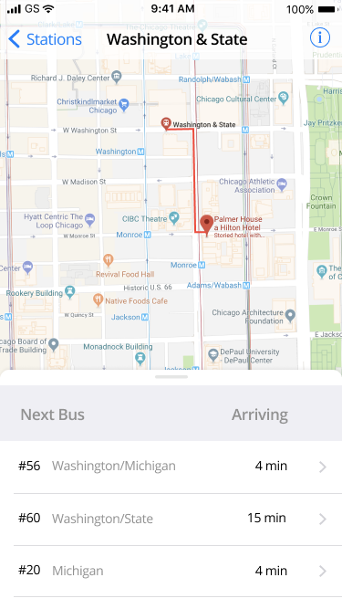
Final Version - Comments
"Your design is solving the problem in the project brief well, and largely following the iOS guidelines with some customization."
"Awesome progress!"